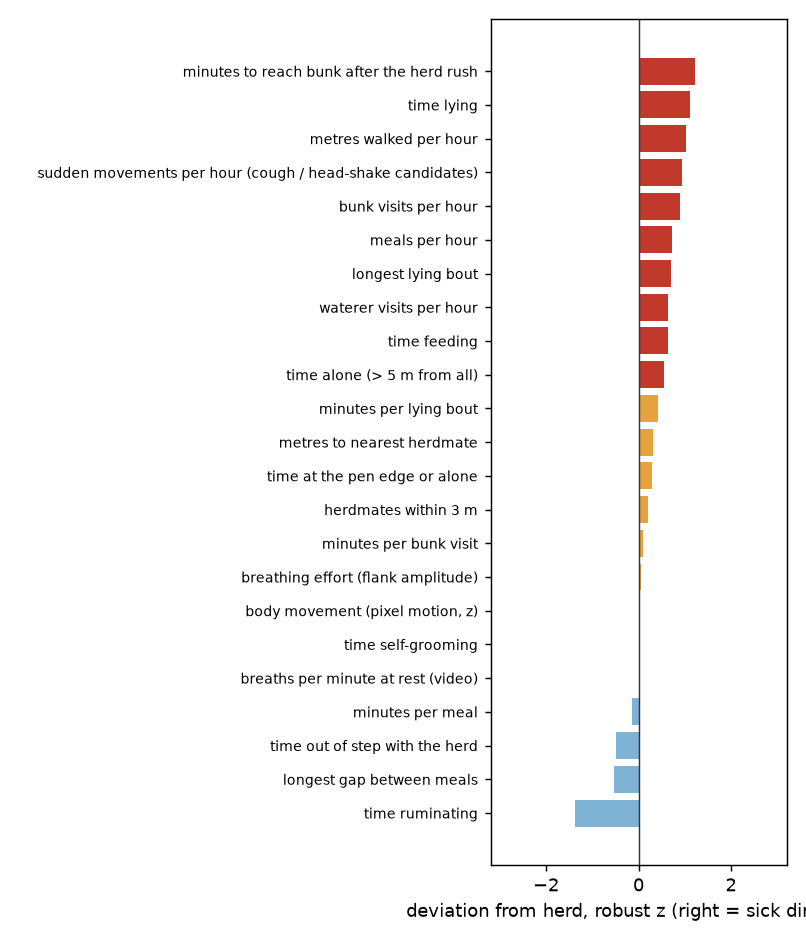

COW_02 elevated risk 0.37 rank 1 of 10
Pen 6, 11-07 00:04:06 to 11-09 00:01:11 (48.0 h of video). Seen for 38.6 h. Rank stable in 92% of time resamples. Confidence: high.
What to do
COW_02 shows a real, worsening appetite problem that began the morning of 11-08: she is slower to the bunk and skipped feed during several herd rushes, with more lying and less walking. No respiratory signs were confirmed - her measured breathing rate was normal and I could not get a clean head-forward view to check nose/eyes/head carriage. Recommend a hands-on pen check of COW_02 (temperature, nasal/ocular inspection, lung auscultation) to rule out early BRD, since the behaviour pattern is suspicious even though cameras gave no visible clinical confirmation.
Why
- minutes to reach bunk after the herd rush 27.0 min vs herd median 19.1 min (z +1.2, over 14 feed calls)
- metres walked per hour 87.5 m/h vs herd 101 m/h at the same hours (z -1.0, 38.6 h observed)
- time feeding 7% vs herd 10% at the same hours (z -0.6, 37.1 h observed)
Behavior score 0.41; visual signs moved the log-odds by -0.15.
Behavior vs herd

Clips
behavior: feed call latency (out of step): cam3 11-07 00:04:24 to 00:04:36
closest view: cam1 11-07 17:49:54 to 17:50:06
Visible clinical signs (agent review, self-checked)
| sign | status | evidence | note |
|---|
| head carried low / depressed | not_assessable | I0018, I0019 | All head crops show COW_02 head-down eating at the bunk; never observed standing-not-eating with a toward/side-on facing, so abnormal head carriage cannot be assessed. |
| ears drooping | absent | I0018, V0003 | In the clear toward-facing head crop (I0018, 1234px, green tag confirms ID) ears carried upright/normal, no droop. |
| nasal discharge | not_assessable | I0018, I0019 | Muzzle at head-down eating angle; no clean daylight >=450px frontal nose view. |
| ocular discharge / tearing | not_assessable | I0018, I0019 | Eyes not clearly resolved in available crops; no qualifying head-forward daylight view. |
| laboured / open-mouth breathing, extended neck | not_assessable | I0018, I0019 | Resting respiratory rate is normal (F-COW_02-breathing_bpm 20.8/min = herd median; F-COW_02-breathing_effort 107% normal), but I captured no still image clearly showing flank/neck/mouth posture, so visible labored breathing cannot be formally assessed from an image. |
| coughing posture | not_assessable | I0020, F-COW_02-jerk_rate | Jerk rate 33.6/h only marginally above herd 30.2; highest-z event sequence (cam3, 197px, IR-soft grey) too small/soft to confirm coughing posture. |
| hollow left flank / gaunt | not_assessable | I0018, I0019 | No clear left-flank view; body crops are rump/top-down at bunk. |
Agent assessment
The appetite deviations are REAL, not artifacts. feed_call_latency (F-COW_02-feed_call_latency) shows a CUSUM-confirmed sustained worsening from 11-08 06h (I0011), and feed_response confirms repeated genuine off-feed episodes on day 2 - notably the 11-08 16:16 herd rush where the herd stayed ~21 min but COW_02 never approached. Reduced feeding_share (F-COW_02-feeding_share), lower bunk_visit_rate (F-COW_02-bunk_visit_rate) and elevated lying_share (F-COW_02-lying_share) are consistent with this appetite drop. Reduced locomotion (F-COW_02-distance_m_per_h) fits a lethargic animal. Rumination is actually above herd (protective). Jerk/isolation deviations are small and unconfirmed.
Sources
- [dart] DART pen-riding signs (Depression: head down, droopy ears, stiff gait; Appetite: slow to the bunk; Respiration: laboured breathing, nasal discharge, cough; Temperature). Purdue Extension VA-33-W. https://www.extension.purdue.edu/extmedia/VA/VA-33-W.pdf
- [ear_acc2022] Early detection of respiratory diseases in calves by use of an ear-attached accelerometer (n = 508): more inactive time on d -4, -2, 0 and longer lying on d -5, -2. Animals 2022. https://pubmed.ncbi.nlm.nih.gov/35565520/
- [feedlot_acc] High-risk feedlot calves with accelerometers (n = 364): activity reductions began >= 6 d before BRD diagnosis and were largest the day before; lying-bout changes. The Bovine Practitioner. https://bovine-ojs-tamu.tdl.org/bovine/article/view/2883
- [hart1988] Hart B.L. 1988. Biological basis of the behavior of sick animals. Neurosci. Biobehav. Rev. 12:123-137 (sickness behavior: lethargy, anorexia, reduced grooming, social withdrawal).
- [marchesini2018] Marchesini G. et al. 2018. Rumination and activity data as health indicators in beef cattle during the early fattening period. Vet. J. https://www.research.unipd.it/retrieve/e14fb26c-9cb8-3de1-e053-1705fe0ac030/Marchesini%202018_TVJ.pdf
- [merck_resp] Merck Veterinary Manual, reference guides: resting respiratory rate of adult cattle about 26-50 breaths/min; rapid, laboured breathing is a cardinal sign of respiratory disease. https://www.merckvetmanual.com
- [padua_water] Electronic drinkers in fattening beef cattle: animals treated for BRD drank less water (20.9 vs 27.3 L/d) and intake fell 2 d before treatment, but drinking time and visit counts did not change. Univ. Padova. https://research.unipd.it/handle/11577/3572258
- [scirep2022] Calves' social network position changes during an experimental respiratory pathogen challenge. Sci. Rep. 2022. https://doi.org/10.1038/s41598-022-13088-2
- [tamu_cusum] Texas A&M GrowSafe bull studies: feeding-behavior traits (bunk-visit duration, head-down duration, variability of non-feeding intervals) change 1-14 d before BRD diagnosis; CUSUM monitoring (J. Anim. Sci. 2019, doi:10.1093/jas/sky486). https://pmc.ncbi.nlm.nih.gov/articles/PMC6396243
- [toaff2018] Toaff-Rosenstein R.L., Tucker C.B. 2018. The sickness response at and before clinical diagnosis of spontaneous bovine respiratory disease. Appl. Anim. Behav. Sci. (feeding time reduced on the diagnosis day; fever precedes anorexia).
- [white2009] White B.J., Renter D.G. 2009. Bayesian estimation of the performance of using clinical observations and harvest lung lesions for diagnosing BRD in post-weaned beef calves. J. Vet. Diagn. Invest. 21:446-453 (clinical-sign diagnosis: Se ~62 %, Sp ~63 %).
- [wolfger2015] Wolfger B. et al. 2015. Feeding behavior as an early predictor of bovine respiratory disease in North American feedlot systems. J. Anim. Sci. 93:377-385 (meal intake, meal time and bunk-visit frequency predict BRD hazard in the week before pulling).
This is a screening index from video behavior, not a diagnosis. Confirm with a hands-on exam (rectal temperature, lung auscultation) before treatment.
Clinical-sign diagnosis of BRD is itself only ~62% sensitive and ~63% specific [white2009].